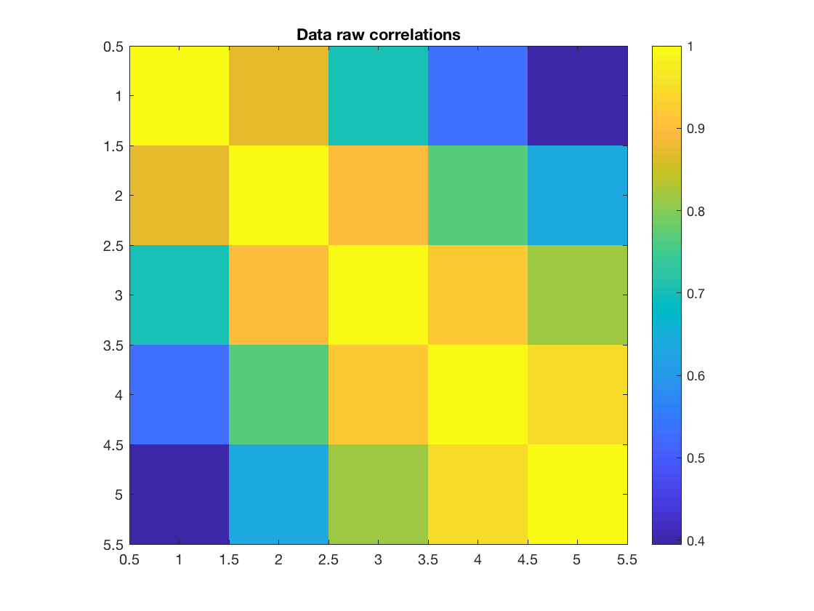
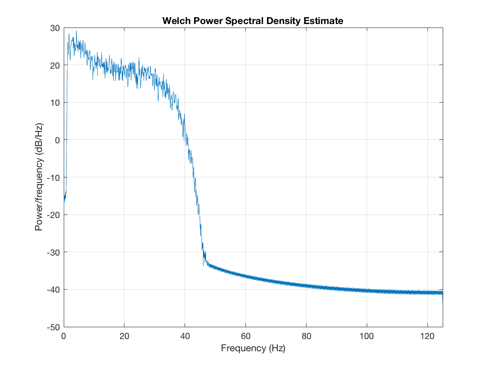
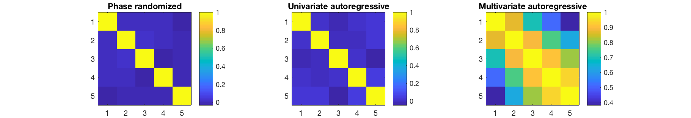
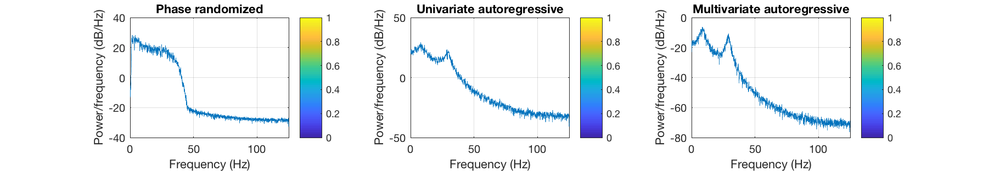
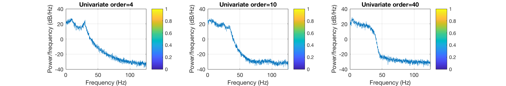

Utils - Surrogate data
One of the most important steps in developing and using analyses is checking to what extent results can be explained by chance. This is commonly performed using surrogate data - using a mathematical procedure to generate simulated or synthetic data that shares as much statistical similarity as the real data as possible, but without the properties that the analysis method is supposed to detect. For example, if you are interested in seeing if some correlations are real, you might generate some data with the same power spectral density but without any genuine correlations, and then check how large the correlations that randomly occur are.
The ability to generate surrogate data is provided by osl_surrogate.m and the usage is extremely simple. First, we will load in some data
D = spm_eeg_load(fullfile(osldir,'example_data','roinets_example','subject_1')); data = D(3:7,:)'; % First two channels aren't MEG
Here, our data matrix is just 3 channels, with rows corresponding to samples and columns corresponding to channels/signals. We can see the correlations in this data, and also have a look at the frequency spectrum
figure imagesc(corr(data)); axis equal; axis tight; colorbar title('Data raw correlations') figure pwelch(data(:,1),[],[],[],D.fsample) 
Now suppose we want to generate some surrogate data. osl_surrogate() provides three different methods:
- phase_randomize generates surrogate data by taking the Fourier transform, randomizing the phase angle, and then transforming back. This exactly preserves the power spectral density
- ar fits an independent univariate autoregressive model to each channel, and then feeds in white noise to generate surrogate data. This approximately preserves the power spectrum, and has no genuine correlations between channels nor any nonlinear features.
- mar fits a single multivariate autoregressive model to the data, and then feeds in white noise to generate surrogate data. This approximately preserves the power spectral density and cross spectral density, which means that correlations will be present, but there will not be any nonlinear or cross-frequency interactions
Note that for 'ar' and 'mar'' it is necessary to specify the order of the autoregressive model as well
surrogate_pr = osl_surrogate(data,'phase_randomization'); surrogate_ar = osl_surrogate(data,'ar',4); surrogate_mar = osl_surrogate(data,'mar',4);
We can then examine the correlations and power spectra in the data
figure subplot(1,3,1) imagesc(corr(surrogate_pr)); axis equal; axis tight; colorbar title('Phase randomized') subplot(1,3,2) imagesc(corr(surrogate_ar)); axis equal; axis tight; colorbar title('Univariate autoregressive') subplot(1,3,3) imagesc(corr(surrogate_mar)); axis equal; axis tight; colorbar title('Multivariate autoregressive') set(gcf,'Position', [440 642 911 156]) figure subplot(1,3,1) pwelch(surrogate_pr(:,1),[],[],[],D.fsample) colorbar title('Phase randomized') subplot(1,3,2) pwelch(surrogate_ar(:,1),[],[],[],D.fsample) colorbar title('Univariate autoregressive') subplot(1,3,3) pwelch(surrogate_mar(:,1),[],[],[],D.fsample) colorbar title('Multivariate autoregressive') set(gcf,'Position', [440 642 911 156]) 
The quality of the spectrum in the autoregressive models depends on the model order. In general, higher orders give better results, and the univariate model is more robust at fitting the spectrum of an individual channel than the multivariate model
figure subplot(1,3,1) pwelch(osl_surrogate(data(:,1),'ar',4),[],[],[],D.fsample) colorbar title('Univariate order=4') subplot(1,3,2) pwelch(osl_surrogate(data(:,1),'ar',10),[],[],[],D.fsample) colorbar title('Univariate order=10') subplot(1,3,3) pwelch(osl_surrogate(data(:,1),'ar',40),[],[],[],D.fsample) colorbar title('Univariate order=40') set(gcf,'Position', [440 642 911 156])